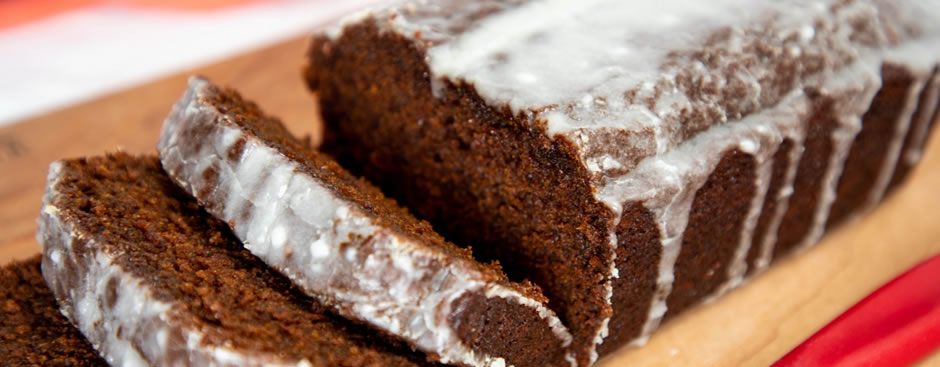

The story of Zubrowka started 600 years ago, in the fourteenth century, when Casimir the Great sat on the throne of Poland. He encouraged learning and science, and his reign saw Polish alchemists master the distillation of Polish ‘wódka’ for the first time.
Old Polish sayings connect Torun with making of some form of gingerbread, and the expansion of the craft, which started in the 13th century A considerable factor behind the development of gingerbread-making in Torun was its excellent location.
Traditionally considered peasant food, pierogi eventually gained popularity and spread throughout all social classes including nobles. Some cookbooks from the 17th century describe how during that era, the pierogi were considered a staple of the Polish diet,-